PLT
植物轨
金属/类金属、河岸径流、长期稳定化与低风险提取。
Three-track remediation framework
Severity then decides treatment intensity, public access and time. This is a rule surface for Barking Reach, not a general green-tech catalogue.
Rule overview
金属/类金属、河岸径流、长期稳定化与低风险提取。
烃类、TPH、PAH、酚、PCB；需要避光、保湿和木质基质。
石棉、氰化物、高金属热点、未知源；先切断暴露路径。
不是静态分区：场地要从 locked → controlled → visible → open 逐步解锁。
粗颗粒、砂、砾石经检测达标后可回填或再利用。
细颗粒、黏土、有机质和污染物形成高污染泥 / 污泥，脱水后外运或进一步修复。
沉淀、絮凝、过滤、活性炭等处理后循环回用，减少新水需求。
阻断人体接触、扬尘和径流路径；Barking Reach 残留 hardstanding 可作为 hard cap 逻辑。
固定污染物迁移性，适合金属热点；需避开密集桩基阵列。
仅用于石棉、氰化物等不可生物处理热点。
污染被转移并浓缩到细泥和污水流。
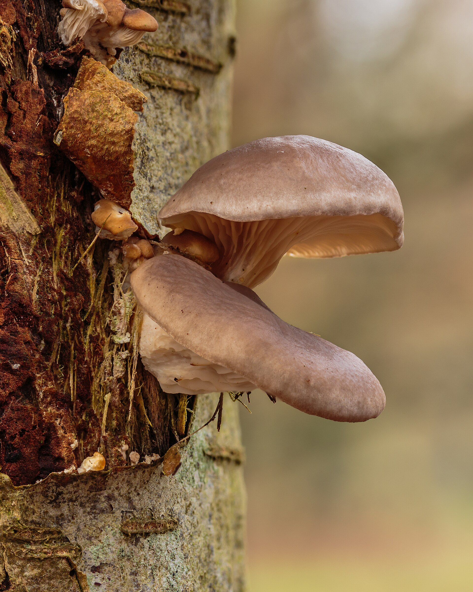
TPH、PAH、酚、PCB 等有机污染物。
避光、保湿、木质纤维基质、温和金属背景。
覆膜 / 帆布拼贴的暗色孵化场，可见但不可进入。
不处理石棉、混凝土、金属和氰化物。
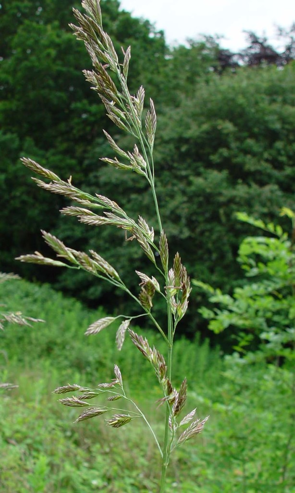
表层稳定化与抗侵蚀覆盖。
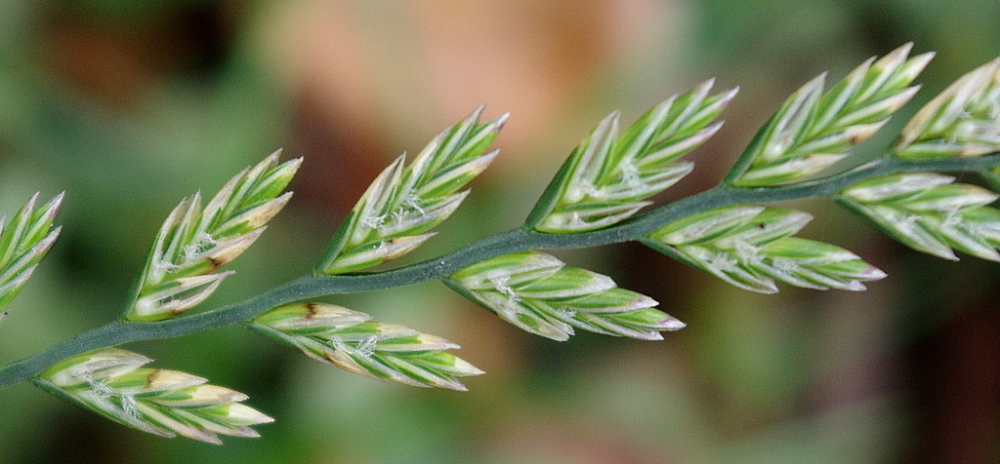
快速建植，先控制扬尘和裸土。
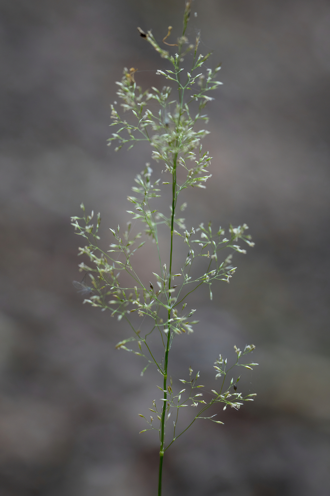
贫瘠/金属土上的低矮草毯。
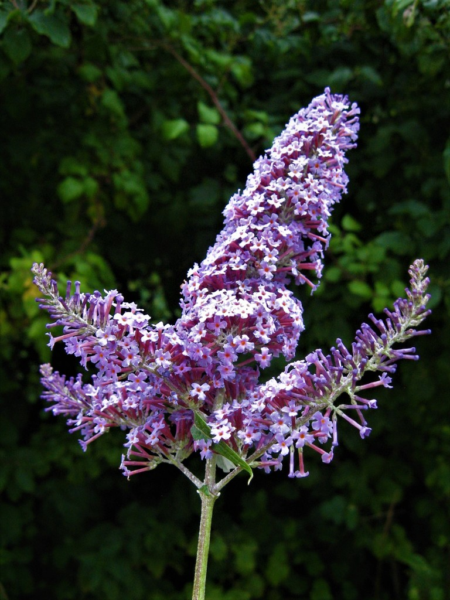
棕地先锋灌木，需边界控制。
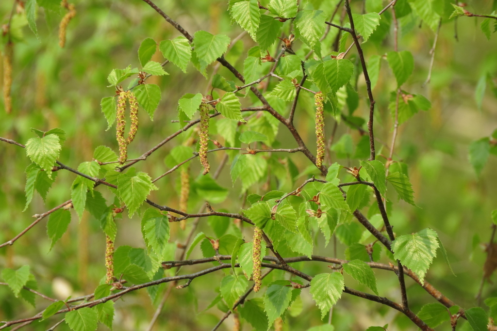
长期先锋林地与演替结构。

中污染长期稳定化，不是一年净化器。
20–25 年生物质基础设施。
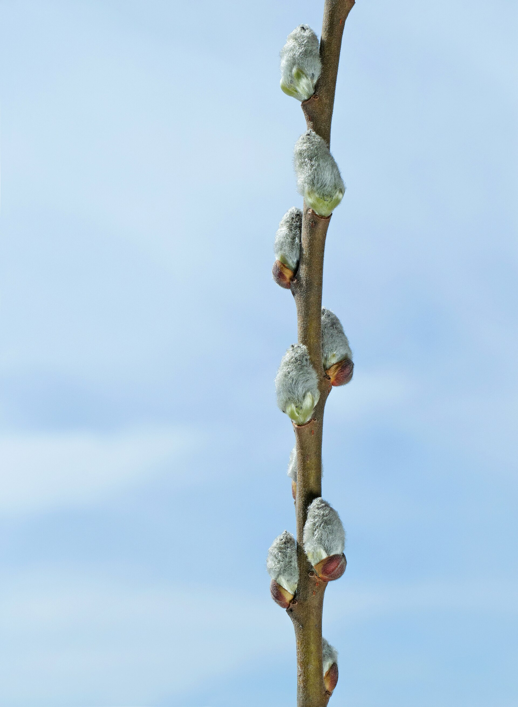
短轮伐、湿地边界与金属管理。
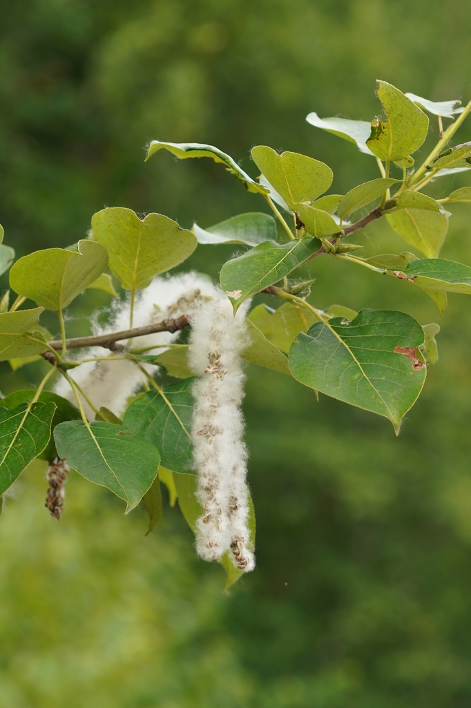
深根液压控制与长期边界林。
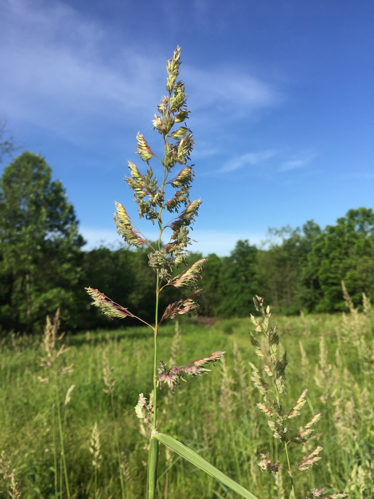
排水沟、湿边界和过滤带。
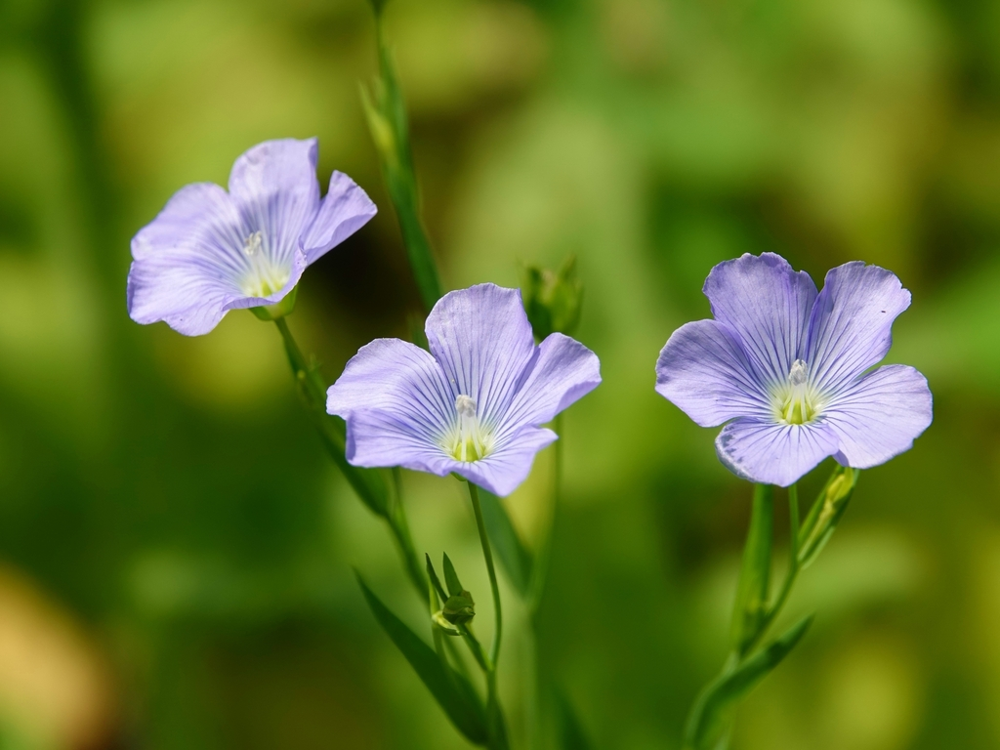
小尺度非食用纤维试验。
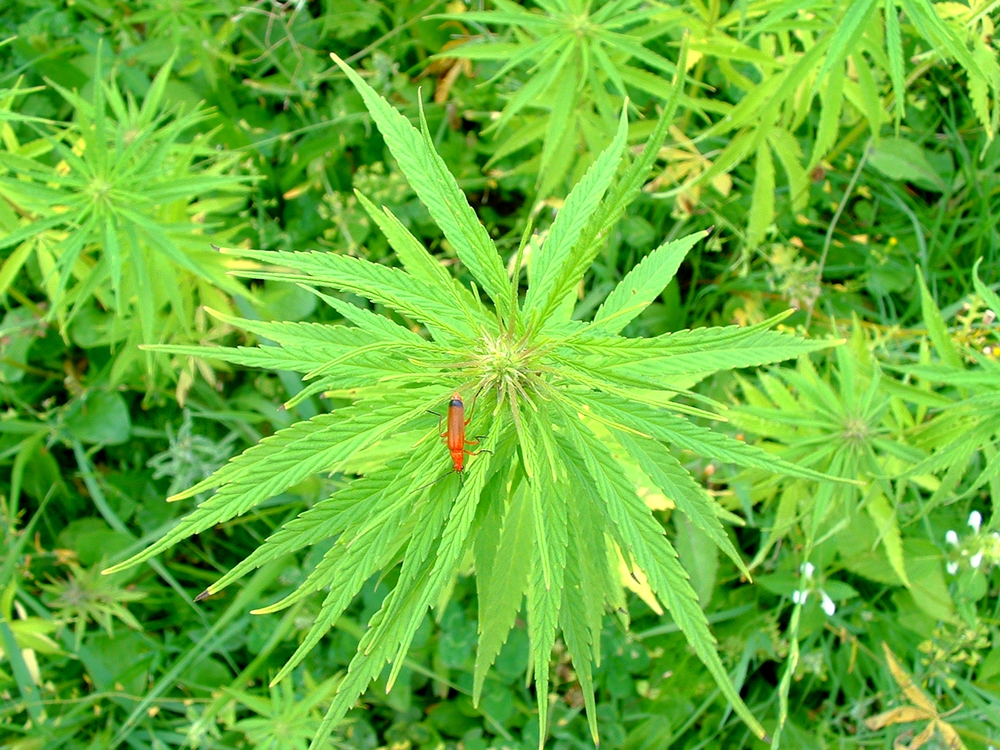
只作为合规前提下的纤维候选。
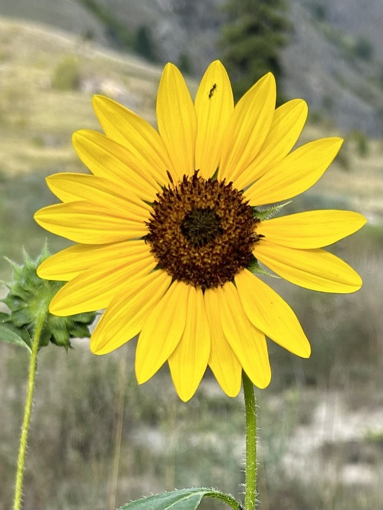
低/中污染的可见提取试验，不可食用。
纤维材料叙事，但收割物按污染生物质处理。
合规、品种和公众观感都需要谨慎。
可进入低风险区的生态与材料边界。
修复后的先锋林地和长期公共空间。
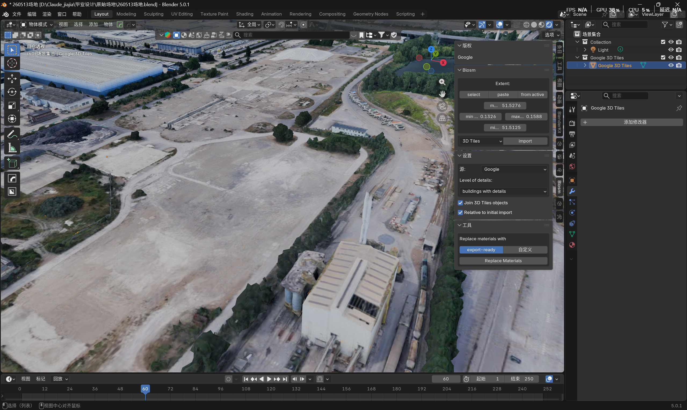
建筑落位只能发生在已验证或已封控的地面上。
场地上游 / 中部污染土和硬质地表径流。
排水沟、潮汐边界、地下水与地表径流。
bioswale、reedbed、柳林、湿草甸。
边界可开放，但必须先受上游修复状态约束。
用 X-ray / 线框显示旧 turbine hall、冷却隧道、hardstanding 和推断污染家族。
极高污染先封控、清洗、固化或挖运。公共路线只能架空或绕行。
有机污染地块进入暗场菌丝孵化，成为视频里最明确的“正在修复”状态。
低风险和修复后地块才转为公园、湿地、短轮伐林和未来建筑基座。